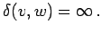

Inhalt Index DeskTop Bronstein

 Algebra und Diskrete Mathematik Algorithmen der Graphentheorie Durchlaufungen von ungerichteten Graphen Kantenfolgen
Algebra und Diskrete Mathematik Algorithmen der Graphentheorie Durchlaufungen von ungerichteten Graphen Kantenfolgen


Der Abstand zweier Knoten v,w eines ungerichteten Graphen ist die Länge eines v mit w verbindenden Weges mit minimaler Kantenzahl. Existiert ein solcher Weg nicht, dann setzt man 